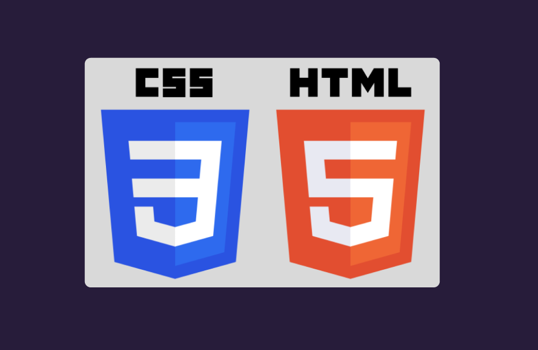
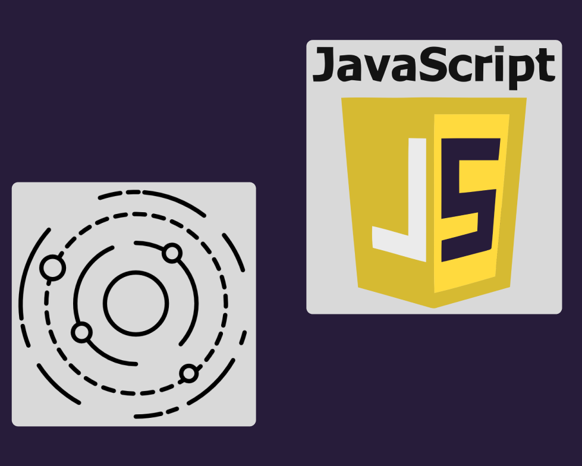

This was a fun side project I worked on after being inspired by a simulation made by someone else. I have a
strong
interest in space and this was a cool way to combine my interest in space with my interest in programming. I
wanted it to
be relatively simple in regards to the visuals and code, but I also wanted to make it as accurate as
possible in terms of scale.
This project used several languages to achieve the orbiting effect, including HTML,
CSS, and
JavaScript. The project was built using HTML for the structure, CSS
for the
styling, and
JavaScript for the stars. Most of this project's appeal is due to the animation styles applied.
Planetary
Orbits
Simulation
Becuase this was a personal project I had more freedom in terms of visuals and tone. I
didn't need to
think
about users and do research into the userbase. I mainly wanted to keep the highlight on the orbits and
not have anything
extra cluttering the screen.
When working on this project I ran into several issues with getting my idea to work using only HTML/CSS.
I didn't use JavaScript for any of the orbits so I had to be creative. I also ran into a few
problems getting the speeds to be proportional.
Because I'm relatively new to Javascript I had issues with the syntax in general, I was used to coding
more physics oriented programs
in Python.


I learned a lot about JavaScript and the syntax. The JavaScript was only used to create
my background stars and was pretty short in terms of lines of code, but
it was a good learning experience for creating objects. In terms of styling, this was the first time I
had
used the CSS animation style
in a project. I was exposed to some new style techniques and how to use them. This was also the first
project that I had to do quite a bit
of research into the code itself, I spent many hours looking at similar projects, debugging, and
figuring out what my error messages
meant. This taught me how to better my keywords when I searched and how to look for reputable sources.